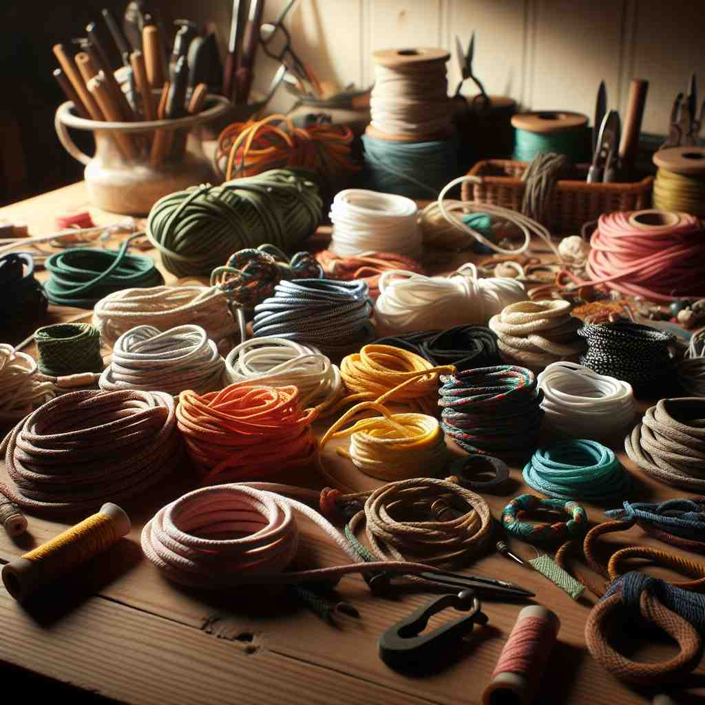

💬 She will tie the package with a cord.

💬 The artist uses colorful cords to create a beautiful design.
🔈 [kɔːd]
🗝️ n. a long, thin piece of material used for tying things together or connecting things
🖼️ 在一个小型手工艺工作坊中，几位朋友正围坐在桌子旁制作手链。其中一位正在使用一根细长的绳子，将五颜六色的小珠子串在一起，这根绳子是用来将不同材料连接在一起的，就像'cord'这个词的核心含义：用于连接或捆绑事物的长而细的材料。
🔍 想象一根细长的绳子（cord），这是核心含义。从这个形象出发，我们可以联想到形状相似的电线、织物纹路、一捆木柴和人体组织。通过'细长'这个特征，你可以轻松记住并理解'cord'的各种含义。
💬 She will tie the package with a cord.
💬 The artist uses colorful cords to create a beautiful design.
🌳 词根 'cord' 源自拉丁语 'cor' 意为心。这一词根用于表示与心、感情、或联系相关的概念。
💡 记忆 'cord' 时，可以联想“心”（心脏与情感），从而帮助理解与情感或联系相关的单词。
🗝️ n. a flexible insulated electrical cable
🖼️ 在一个现代化的家庭客厅里，一位年轻人在沙发上为他的笔记本电脑充电。他将插头插入墙上的插座，一条柔软、绝缘的电线连接着充电器和电脑，这正是'cord'作为灵活绝缘电缆的意思。
💬 He plugged the lamp's cord into the wall socket.
❓ 形状类似于细绳的电线
🗝️ n. a ribbed fabric, especially corduroy
🖼️ 在一个温馨的秋季服装店中，一位顾客正在挑选一条舒适的裤子。他的手指轻轻划过布料，感受到面料上的细密条纹，这条面料叫灯芯绒，代表了'cord'作为罗纹织物的含义。
💬 He wore a pair of cord trousers.
❓ 织物表面有类似细绳的凸起纹路
🗝️ n. a unit of wood cut for fuel, equal to 128 cubic feet
🖼️ 在一个乡村木材场，工人们忙碌地堆垛着一木一木的劈柴。老板走过来，点算着木柴的数量，为确保每一'cord'的木柴都等于128立方英尺，这是'cord'作为木材单位的含义。
💬 They ordered two cords of firewood for the winter.
❓ 早期用绳子测量的一捆木柴
🗝️ n. a body structure resembling a cord, especially the spinal cord
🖼️ 在一间现代化的生物实验室里，科学家们正在研究一张人体解剖图。其中一位指着脊柱位置特征的细长结构，解释这是人体的脊髓，是'cord'作为与身体相似的结构，特别是脊髓的含义。
💬 The accident caused damage to his spinal cord.
❓ 形状类似细绳的身体组织